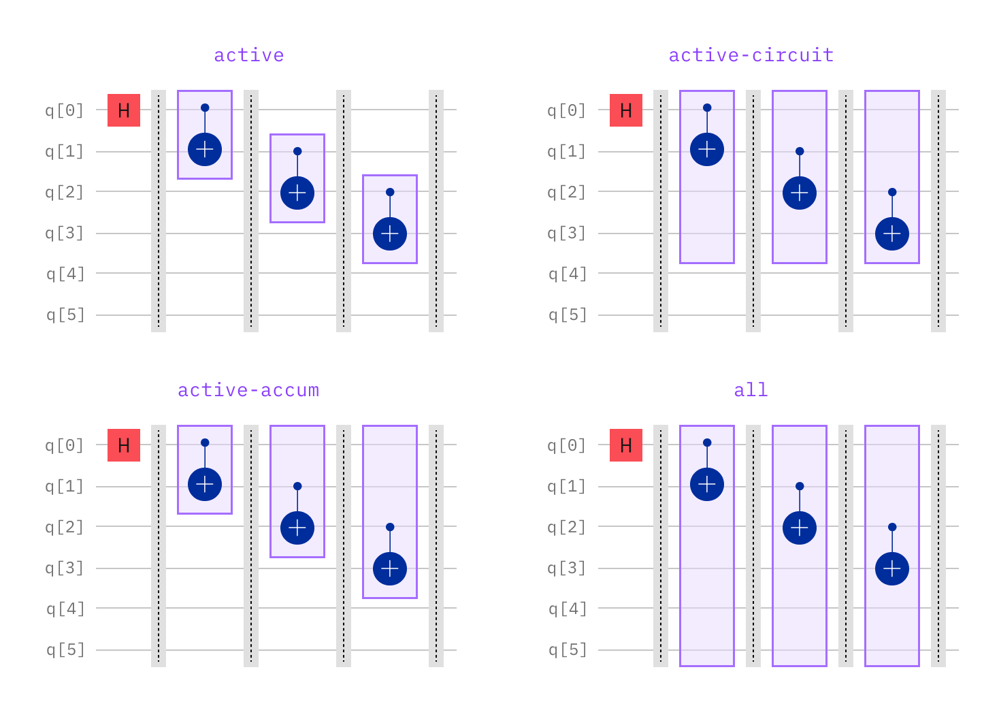

TwirlingOptions¶
- class TwirlingOptions(enable_gates=Unset, enable_measure=Unset, num_randomizations=Unset, shots_per_randomization=Unset, strategy=Unset)[source]¶
Bases:
objectTwirling options.
Attributes
- Parameters:
enable_gates (UnsetType | bool)
enable_measure (UnsetType | bool)
num_randomizations (UnsetType | int | Literal['auto'])
shots_per_randomization (UnsetType | int | Literal['auto'])
strategy (UnsetType | Literal['active', 'active-accum', 'active-circuit', 'all'])
- enable_gates: UnsetType | bool = Unset¶
Whether to apply 2-qubit Clifford gate twirling.
Default:
False.
- enable_measure: UnsetType | bool = Unset¶
Whether to enable twirling to measurement instructions, as long as the measurement is not involved within a conditional block.
Default:
TrueforEstimator,FalseforSampler.
- num_randomizations: UnsetType | int | Literal['auto'] = Unset¶
The number of random samples to use when twirling or peforming sampled mitigation.
If
num_randomizationsis “auto”, for every pub executedshotstimes:If
shots_per_randomizationis also “auto”,shots_per_randomizationis set first as described below, thennum_randomizationsis set asceil(shots/shots_per_randomization), whereceilis the ceiling function.Otherwise, the value is set to
ceil(shots/shots_per_randomization).
Default:
"auto".Note
The
shotsvalue specified in a PUB or in therun()method is considered part of the primitive execution interface and therefore is always obeyed.default_shots, on the other hand, is considered a Qiskit Runtime specific option. Therefore, the product ofnum_randomizationsandshots_per_randomizationtakes precedence overdefault_shots.
- shots_per_randomization: UnsetType | int | Literal['auto'] = Unset¶
The number of shots to run for each random sample.
If “auto”, for every pub executed
shotstimes:If
num_randomizationsis also “auto”, the value is set to64for PEC mitigation or tomax(64, ceil(shots / 32))in all other cases, whereceilis the ceiling function.Otherwise, the value is set to
ceil(shots/num_randomizations).
Default:
"auto".Note
The
shotsvalue specified in a PUB or in therun()method is considered part of the primitive execution interface and therefore is always obeyed.default_shots, on the other hand, is considered a Qiskit Runtime specific option. Therefore, the product ofnum_randomizationsandshots_per_randomizationtakes precedence overdefault_shots.
- strategy: UnsetType | Literal['active', 'active-accum', 'active-circuit', 'all'] = Unset¶
Specify the strategy of twirling qubits in identified layers of 2-qubit twirled gates.
Allowed values are:
If
"active"only the instruction qubits in each individual twirled layer will be twirled.If
"active-circuit"the union of all instruction qubits in the circuit will be twirled in each twirled layer.If
"active-accum"the union of instructions qubits in the circuit up to the current twirled layer will be twirled in each individual twirled layer.If
"all"all qubits in the input circuit will be twirled in each twirled layer.
Default:
"active-accum".
Methods